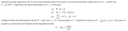
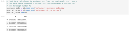
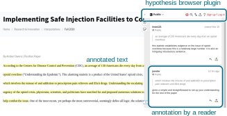
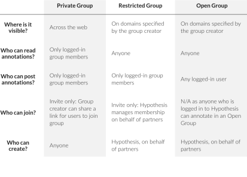
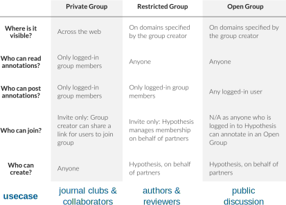

Module 2: Digitalisation in Research
Interactive and enriched articles
Jana Lasser
TU Graz & CSH Vienna
2021-12-16
The current state of the art in academic publishing: PDF
PDFs are static.
Content length is limited – sometimes drastically.
Content types are limited.
PDFs are very accessible.
PDFs are easy to maintain.
Moving research articles to the 21st century: why?
Coding notebooks
Rendered & hyperlinked text (Markdown)
Executable code (Python)
Some application examples
Reproducing figures of a primary publication given the original data (notebook)
Accompanying the main publication with a tutorial to reproduce the analysis (notebook → open binder)
Converting a full publication to an executable format (notebook → open binder)
Article enriched with code embedded in a journal (eLife)
Find more application examples in this gallery and eLife's executable research articles collection.
An article that describes the process of creating an executable article in more detail this gallery.
HowTo:
Jupyter notebooks vs. R markdown
| feature | R markdown | jupyter notebook |
|---|---|---|
| editing | editable in plain text | JSON under the hood needs → software to edit effectively |
| programming language | R | supports many kernels |
| interactivity | supported with shiny documents | supported natively |
| online deployment | supported with ShinyApps | binder (no installation) or voila + heroku |
"Enriched" articles with hypothesis.io
Coding notebooks are only relevant for some disciplines → web annotations

Source: screenshot from this article by Amber Owens.
Use of annotations for authors
Use annotations to enrich an article with less formal content.
Abstracts are the purely descriptive summaries often found at the beginning of scholarly journal articles or in periodical indexes. Annotations are descriptive and critical; they may describe the author's point of view, authority, or clarity and appropriateness of expression.*
Enrich an article with images, videos or links to other articles which don't find space in the main text.
Annotate the bibliography to highlight important work and contextualise references (there are even guides for this).
*Borrowed from this annotation guide.
Hypothesis groups
Source: adapted from here.
Hypothesis groups
Source: adapted from here.
One step further: interactive scholarly works
These interactive scholarly works are published and reviewed by Stanford University Press
Summary
Interactive and enriched publications...
... can foster better understanding.
... accelerate publication of data and methods and foster transparency and reproducibility.
... are a lot of work with little reward*.
... are technologically complex and hard to maintain.
... both increase acessibility (open tools) and decrease accessibility (complexity).
*If we are just counting the "hard currency" of academia: publications and grants.